Una función es un bloque de código reutilizable que realiza una tarea específica.
Las funciones ayudan a organizar y simplificar el código, permitiendo la reutilización y evitando la repetición.
CÓMO DEFINIR LAS FUNCIONES
Para definir una función se utiliza la palabra clave def, seguida del nombre de la función, paréntesis y dos puntos. El bloque de código de la función se escribe con sangría.
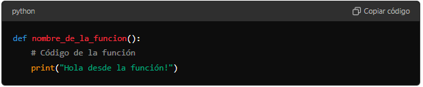
ACTIVIDADES
FUNCIONES SIMPLES SIN ARGUMENTO
Crear una función que imprima un mensaje de bienvenida.
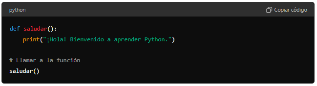
Explicación:
Definición de la función:
defsaludar():
La palabra clave def se usa para definir una nueva función en Python.
saludar es el nombre de la función. Este nombre se usa para identificar y llamar a la función más tarde.
Los paréntesis () indican que esta función no toma ningún argumento.
Los dos puntos : indican el comienzo del bloque de código que pertenece a la función.
Cuerpo de la función:
print("¡Hola! Bienvenido a aprender Python.")
Este es el código que se ejecutará cuando se llame a la función saludar.
print es una función integrada en Python que imprime el texto entre comillas en la consola.
En este caso, imprimirá el mensaje "¡Hola! Bienvenido a aprender Python.".
Llamada a la función:
saludar()
Aquí es donde la función saludar es llamada.
Cuando se llama a la función, el flujo del programa se transfiere a la función saludar, y el código dentro de esa función se ejecuta.
Como resultado, el mensaje "¡Hola! Bienvenido a aprender Python." se imprimirá en la consola.
Resumen
Primero defines una función llamada saludar que no toma argumentos y tiene una sola línea de código que imprime un mensaje.
Luego, llamas a la función saludar, lo que hace que el mensaje sea impreso en la consola.
Este es un ejemplo básico pero fundamental en Python para entender cómo funcionan las funciones y la estructura básica de un programa. Las funciones son bloques de código reutilizables que permiten organizar y modularizar el código para hacerlo más legible y manejable.
FUNCIONES SIMPLES CON ARGUMENTO
Cuando una función toma argumentos, significa que la función puede recibir valores al ser llamada, lo cual permite que la función procese esos valores y realice acciones basadas en ellos. Aquí tienes un ejemplo para ilustrar esto:
Ejemplo de una función con argumentos:
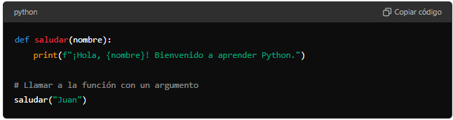
Explicación:
Definición de la función con un argumento:
defsaludar(nombre):
def se usa para definir una función.
saludar es el nombre de la función.
nombre es un argumento de la función. Esto significa que cuando se llama a la función saludar, se espera que se le proporcione un valor para nombre.
Los dos puntos : indican el comienzo del bloque de código que pertenece a la función.
Cuerpo de la función:
print(f"¡Hola, {nombre}! Bienvenido a aprender Python.")
Aquí, la función usa el valor del argumento nombre dentro del mensaje que imprime.
f antes de las comillas convierte la cadena en una "f-string", lo que permite insertar valores de variables dentro de la cadena usando llaves {}.
Llamada a la función con un argumento:
saludar("Juan")
Aquí se llama a la función saludar y se pasa el valor "Juan" como argumento.
El flujo del programa se transfiere a la función saludar, donde nombre toma el valor "Juan", y la función imprime el mensaje: "¡Hola, Juan! Bienvenido a aprender Python.".
FUNCIONES SIMPLES CON MÚLTIPLES ARGUMENTOS
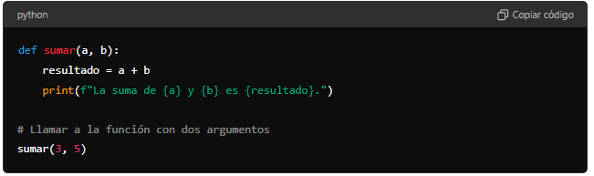
Explicación:
Definición de la función con dos argumentos:
defsumar(a, b):
sumar es el nombre de la función.
a y b son los argumentos de la función.
Cuerpo de la función:
resultado = a + b
print(f"La suma de {a} y {b} es {resultado}.")
La función suma los valores de a y b y guarda el resultado en la variable resultado.
Luego, imprime el resultado de la suma usando una f-string.
Llamada a la función con dos argumentos:
sumar(3, 5)
Aquí se llama a la función sumar y se pasan los valores 3 y 5 como argumentos.
La función imprime: "La suma de 3 y 5 es 8.".
Resumen
Las funciones pueden tomar uno o más argumentos, lo que les permite ser más flexibles y reutilizables.
Los argumentos se especifican dentro de los paréntesis al definir la función.
Cuando se llama a la función, se deben proporcionar los valores correspondientes para esos argumentos.
Los valores de los argumentos se usan dentro de la función para realizar operaciones o cálculos y producir resultados basados en ellos.
FUNCIÓN input()
La función input() en Python se utiliza para obtener datos del usuario a través del teclado. Cuando se llama a esta función, el programa se detiene y espera a que el usuario escriba algo y presione Enter. El texto ingresado se devuelve como una cadena (string) y se puede almacenar en una variable para su uso posterior.
Aquí tienes un ejemplo sencillo:
nombre = input("¿Cómo te llamas? ") print(f"Hola, {nombre}!")
En este ejemplo, el programa le pide al usuario que ingrese su nombre y luego imprime un saludo personalizado.
Ejemplo 1: Función con un argumento usando input
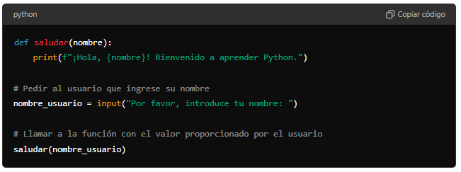
Explicación:
Definición de la función:
La función saludar toma un argumento nombre.
Pedir entrada al usuario:
nombre_usuario = input("Por favor, introduce tu nombre: ")
input("Por favor, introduce tu nombre: ") muestra un mensaje al usuario y espera a que el usuario introduzca un valor.
El valor introducido se guarda en la variable nombre_usuario.
Llamar a la función con la entrada del usuario:
saludar(nombre_usuario)
La función saludar se llama con el valor proporcionado por el usuario.
Ejemplo 2: Función con múltiples argumentos usando input
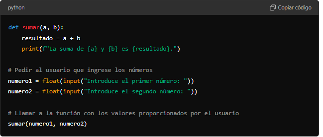
Explicación:
Definición de la función:
La función sumar toma dos argumentos a y b.
Pedir entrada al usuario:
numero1 = float(input("Introduce el primer número: "))
numero2 = float(input("Introduce el segundo número: "))
input("Introduce el primer número: ") muestra un mensaje al usuario y espera a que el usuario introduzca un valor.
float se usa para convertir la entrada del usuario a un número decimal, ya que input devuelve una cadena por defecto.
Los valores introducidos se guardan en las variables numero1 y numero2.
Llamar a la función con la entrada del usuario:
sumar(numero1, numero2)
La función sumar se llama con los valores proporcionados por el usuario.
Resumen:
Usar input permite que los usuarios introduzcan datos mientras el programa se está ejecutando.
Los valores proporcionados por los usuarios pueden ser usados como argumentos en funciones para hacer el programa interactivo y dinámico.
Lectura facilitada
Programa para determinar si es mayor de edad
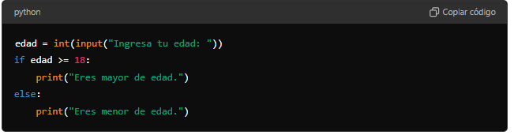
1. Entrada de datos:
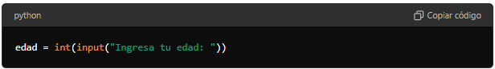
input("Ingresa tu edad: ") muestra un mensaje al usuario para que ingrese su edad.
int(...) convierte la entrada del usuario de una cadena de texto (str) a un número entero (int).
2. Condicionalif-else:
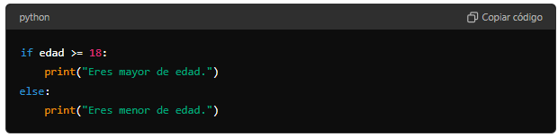
La sentencia if verifica si la edad ingresada es mayor o igual a 18.
Si la condición edad >= 18 es verdadera, se ejecuta print("Eres mayor de edad.").
Si la condición es falsa, se ejecuta el bloque else, que imprime print("Eres menor de edad.").
Funcionamiento
El usuario ingresa su edad.
El programa determina si la persona es mayor o menor de edad y muestra el mensaje correspondiente.
Programa para determinar la calificación basada en la nota
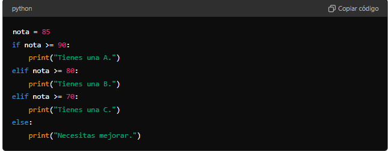
1. Asignación de la variable nota:
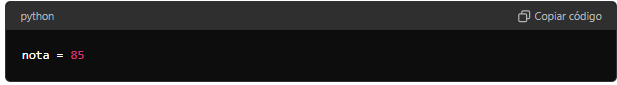
Aquí se asigna directamente el valor 85 a la variable nota.
2. Condicionalif-elif-else:
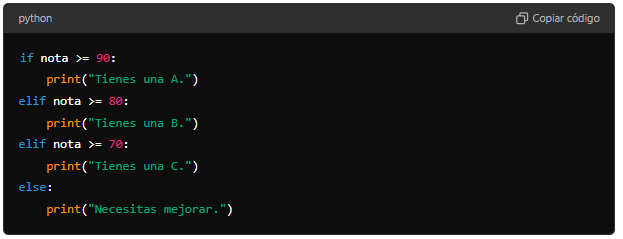
La sentencia if verifica si la nota es mayor o igual a 90.
Si la condición nota >= 90 es verdadera, se ejecuta print("Tienes una A.").
Si no, se evalúa la siguiente condición elif, que verifica si la nota es mayor o igual a 80.
Si nota >= 80 es verdadera, se ejecuta print("Tienes una B.").
Si ninguna de las condiciones anteriores es verdadera, se evalúa la siguiente condición elif, que verifica si la nota es mayor o igual a 70.
Si nota >= 70 es verdadera, se ejecuta print("Tienes una C."). Si ninguna de las condiciones anteriores es verdadera, se ejecuta el bloque else, que imprime print("Necesitas mejorar.").
Funcionamiento
El valor de la nota se evalúa para determinar la calificación.
Dependiendo del valor de la nota, se imprime un mensaje que indica la calificación (A, B, C) o la necesidad de mejorar.
Resumen
if: Ejecuta un bloque de código si la condición es verdadera.
elif: Proporciona condiciones adicionales si la condición if original es falsa.
else: Captura todos los demás casos cuando ninguna de las condiciones anteriores es verdadera.
Estas estructuras se utilizan en conjunto para permitir que el programa tome decisiones y ejecute diferentes bloques de código basados en diferentes condiciones.
TAREA
Escribir un programa que convierta una cantidad de metros a centímetros.
Resumir, en el cuaderno y a mano, los puntos clave de la sesión.
Objetivo
Crea un programa en Python que:
Solicite una cantidad en metros al usuario.
Convierta esa cantidad a centímetros.
Imprima el resultado de la conversión.
Instrucciones
Define una función para convertir metros a centímetros:
La función debe tomar una cantidad en metros como argumento.
Debe devolver la cantidad equivalente en centímetros.
Solicita la cantidad en metros al usuario:
Usa input para solicitar la cantidad al usuario.
Convierte la entrada del usuario a un número de punto flotante (float).
Llama a la función de conversión y muestra el resultado:
Usa la función print para mostrar el resultado de la conversión.
Ejemplo de Código
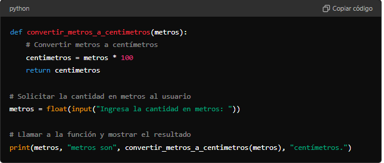
Explicación Detallada
Paso 1: Definir una función para convertir metros a centímetros
defconvertir_metros_a_centimetros(metros):
centimetros = metros * 100return centimetros
def convertir_metros_a_centimetros(metros): define una función llamada convertir_metros_a_centimetros que toma un argumento metros.
Dentro de la función, se realiza la conversión multiplicando metros por 100 para obtener la cantidad en centímetros.
La función devuelve el valor calculado en centímetros con return centimetros.
Paso 2: Solicitar la cantidad en metros al usuario
metros = float(input("Ingresa la cantidad en metros: "))
input("Ingresa la cantidad en metros: ") muestra un mensaje al usuario pidiéndole que ingrese una cantidad en metros.
float(...) convierte la entrada del usuario (que es una cadena de texto) en un número de punto flotante y lo almacena en la variable metros.
Paso 3: Llamar a la función de conversión y mostrar el resultado
convertir_metros_a_centimetros(metros) llama a la función definida anteriormente, pasando la cantidad en metros ingresada por el usuario como argumento.
La función devuelve la cantidad en centímetros, que luego se imprime junto con el mensaje metros, "metros son", ... , "centímetros.".
Funcionamiento
El usuario ingresa una cantidad en metros:
El usuario ve el mensaje Ingresa la cantidad en metros: y escribe un número, por ejemplo, 2.5.
El programa convierte esta entrada a un número de punto flotante y la almacena en la variable metros.
El programa llama a la función para convertir la cantidad a centímetros:
La función convertir_metros_a_centimetros toma el valor de metros (2.5) y lo convierte a centímetros multiplicando por 100.
La función devuelve el valor 250.0.
El programa imprime el resultado de la conversión:
El programa usa print para mostrar el mensaje 2.5 metros son 250.0 centímetros..
Resultado Esperado
Cuando ejecutes el programa, deberías ver algo similar a esto en la pantalla:
Ingresa la cantidad en metros:2.5
2.5metrosson250.0centímetros.
Consejos
Asegúrate de ingresar un número válido cuando el programa te lo solicite.
Revisa tu código para asegurarte de que no haya errores de sintaxis y que las variables y funciones estén correctamente definidas.
¡Diviértete programando y aprendiendo a usar funciones y la función print en Python!